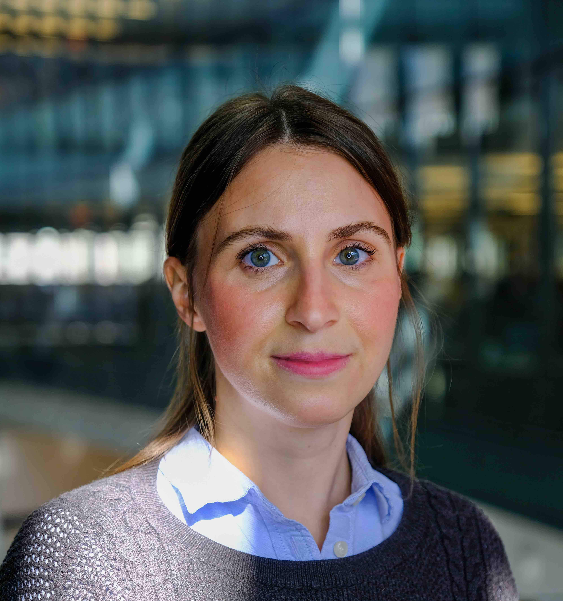

mechanics-based mathematical modeling
numerical and computational methods
image-based analysis and inference
collaborations with experimentalists
Our group is broadly interested in mathematical biology of the cell.
We are a team of interdisciplinary scientists that develop models and new mathematical tools to tease apart the "internal machinery" of a living cell. Our work combines:
| Oct 8-11 | Ying is away deciphering the effect of oral contraceptives on coagulation as part of a WAMB (Women Advancing Mathematical Biology) collaboration. 5 years later, and 2 publications later, Calina is still an active member of WAMB Class of 2019! |
| Aug 14th | New paper discovers a system where inner cells are active contributors to group migration. |
| July 8th | Nidhi starts her co-op project on intracellular architecture (partly funded by the Northeastern Co-ops to On-Ramp into Research Endeavors). |
| July 3rd | Ying is awarded the AMS-Simons Travel Grant!! |
| May 31st | Katie graduates and will pursue a Ph.D. in Mathematics at UW Madison! Her paper is submitted for publication! Katie did a lot of great work to understand the molecular origin of collective symmetry breaking. |
| May 6th | Shawn "graduates" from an intern to an REU in the group working alongside Sam on tissue regeneration. |
- NSF Division of Mathematical Sciences Grant DMS2209494 (2020 - 2024)